شوفه. ارصده. أنقذه.
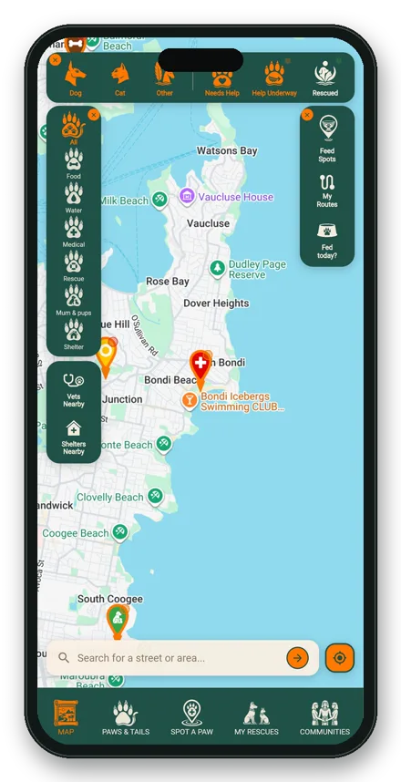
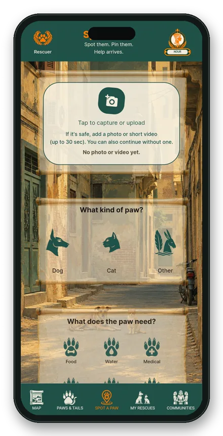
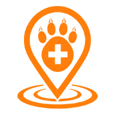
صورة، ونوع الحيوان، وما يحتاج إليه.
كل ذلك في أقل من دقيقة.
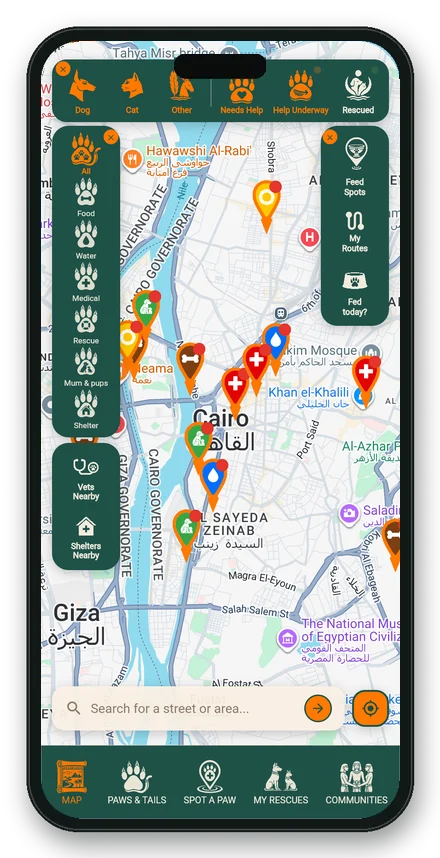
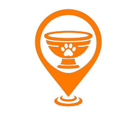
كل حيوان قريب منك، مُثبَّت حيث شوهد.
ونقاط الإطعام والأطباء البيطريون والملاجئ على مقربة.
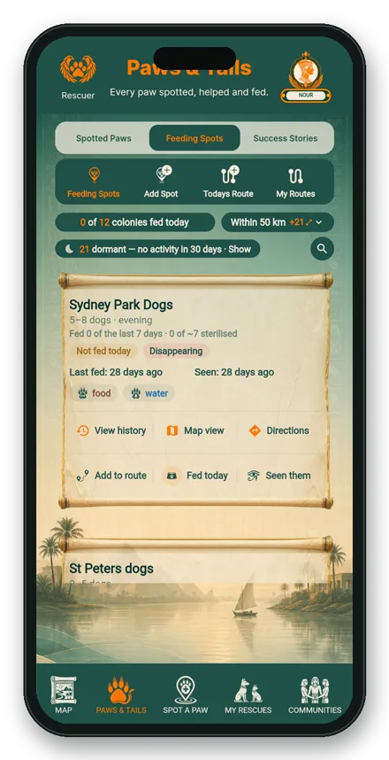
اعرف أي المستعمرات أُطعمت اليوم وأيها فاتها الإطعام.
أضف مكانًا إلى مسارك.
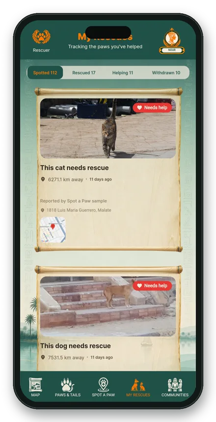
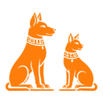
رُصد، أُنقذ، قيد المساعدة.
كلها في مكان واحد، مع ما جرى لكلٍّ منها.
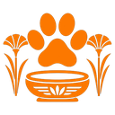
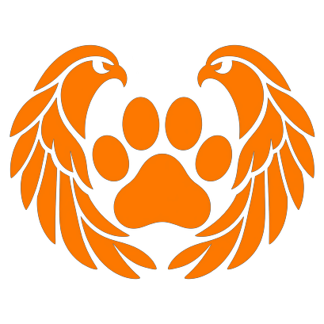
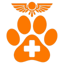
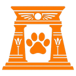
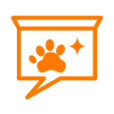
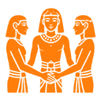
كل حيوان نرصده يمكنه أن يكمل الطريق حتى النهاية.
Spot a Paw مجاني وسيبقى كذلك دائمًا.
تطبيقات a-Paw المدفوعة تتكفّل بتكلفته.